Author: Chuwen Zhong, Zhanchao Yang
Three-choice Variable: Agree, Neither agree nor disagree, Disagree
Latent Class Analysis is a model-based clustering method for finding unobserved (“latent”) subgroups in multivariate categorical data. Unlike distance-based clustering (e.g., k-means), LCA assumes that an underlying categorical variable (the latent class) drives the joint distribution of observed indicators.
Model Formulation
Given $J$ categorical variables $Y_1,\dots,Y_J$ and $C$ latent classes:
$$ P(Y_1=y_1,\dots,Y_J=y_J) =\sum_{c=1}^C P(C=c)\prod_{j=1}^J P(Y_j=y_j \mid C=c) $$
Results table (k = 5)
| Variable | Cluster 1 | Cluster 2 | Cluster 3 | Cluster 4 | Cluster 5 |
|---|---|---|---|---|---|
| line | 58.9, 41.1 | 54.5, 45.5 | 39.1, 60.9 | 35.5, 64.5 | 73.2, 26.8 |
| Gender | 68, 32 | 59.1, 40.9 | 72.5, 27.5 | 48.4, 51.6 | 54.9, 45.1 |
| Education | 0, 1.5, 2.5, 18.8, 3, 13.7, 7.6, 17.8, 1.5, 26.9, 6.6, 0 | 6.8, 21.6, 22.7, 10.2, 1.1, 8, 2.3, 11.4, 3.4, 6.8, 2.3, 3.4 | 8.7, 8, 10.1, 21.7, 1.4, 26.8, 3.6, 4.3, 5.8, 8.7, 0, 0.7 | 9.7, 35.5, 0, 16.1, 0, 6.5, 6.5, 19.4, 6.5, 0, 0, 0 | 1.2, 12.2, 2.4, 30.5, 2.4, 24.4, 4.9, 2.4, 2.4, 9.8, 3.7, 3.7 |
| Occupation | 3, 0.5, 0, 5.1, 0.5, 36.5, 4.6, 11.2, 4.6, 30.5, 0, 0, 3.6 | 0, 0, 1.1, 0, 0, 1.1, 0, 3.4, 4.5, 18.2, 0, 1.1, 70.5 | 3.6, 0.7, 0, 3.6, 0, 31.9, 0, 1.4, 18.8, 25.4, 2.9, 4.3, 7.2 | 0, 0, 12.9, 0, 0, 0, 0, 0, 16.1, 25.8, 0, 3.2, 41.9 | 1.2, 0, 4.9, 0, 1.2, 26.8, 2.4, 4.9, 8.5, 35.4, 0, 0, 14.6 |
| Housing type | 60.9, 36, 0, 3, 0 | 79.5, 17, 1.1, 0, 2.3 | 54.3, 37, 8.7, 0, 0 | 80.6, 9.7, 9.7, 0, 0 | 56.1, 40.2, 3.7, 0, 0 |
| Income | 0.5, 7.6, 8.1, 11.2, 12.2, 13.2, 13.2, 11.2, 4.1, 2, 0.5, 16.2 | 10.2, 8, 6.8, 17, 12.5, 6.8, 12.5, 6.8, 9.1, 0, 1.1, 9.1 | 0.7, 6.5, 15.9, 27.5, 13.8, 6.5, 2.2, 7.2, 0, 0.7, 0, 18.8 | 3.2, 0, 16.1, 16.1, 9.7, 29, 3.2, 0, 3.2, 0, 0, 19.4 | 1.2, 8.5, 4.9, 6.1, 11, 2.4, 14.6, 1.2, 0, 0, 0, 50 |
| Support or not | 88.3, 11.7 | 93.2, 6.8 | 100, 0 | 77.4, 22.6 | 89, 11 |
| Rent or own | 37.6, 62.4 | 80.7, 19.3 | 11.6, 88.4 | 45.2, 54.8 | 57.3, 42.7 |
| P87 | 82.2, 15.2, 2.5 | 83, 17, 0 | 44.2, 50.7, 5.1 | 54.8, 32.3, 12.9 | 52.4, 45.1, 2.4 |
| P90 | 37.6, 35, 27.4 | 44.3, 27.3, 28.4 | 24.6, 69.6, 5.8 | 12.9, 35.5, 51.6 | 14.6, 70.7, 14.6 |
| P91 | 84.3, 15.7, 0 | 68.2, 30.7, 1.1 | 44.2, 55.8, 0 | 58.1, 9.7, 32.3 | 19.5, 75.6, 4.9 |
| P92 | 73.6, 18.8, 7.6 | 72.7, 27.3, 0 | 47.1, 50, 2.9 | 22.6, 6.5, 71 | 11, 79.3, 9.8 |
| P95 | 49.7, 33.5, 16.8 | 67, 23.9, 9.1 | 59.4, 23.2, 17.4 | 12.9, 25.8, 61.3 | 13.4, 80.5, 6.1 |
| P96 | 24.9, 25.9, 49.2 | 25, 30.7, 44.3 | 21, 26.8, 52.2 | 9.7, 19.4, 71 | 0, 75.6, 24.4 |
| P98 | 72.6, 11.7, 15.7 | 44.3, 25, 30.7 | 23.9, 39.1, 37 | 67.7, 16.1, 16.1 | 15.9, 81.7, 2.4 |
| P100 | 28.4, 23.9, 47.7 | 51.1, 43.2, 5.7 | 26.8, 57.2, 15.9 | 9.7, 29, 61.3 | 8.5, 79.3, 12.2 |
| P101 | 69.5, 15.7, 14.7 | 72.7, 22.7, 4.5 | 55.1, 39.1, 5.8 | 48.4, 3.2, 48.4 | 6.1, 92.7, 1.2 |
| Age | 2, 23.4, 32.5, 28.4, 13.7, 0 | 1.1, 0, 0, 10.2, 25, 63.6 | 14.5, 13, 18.1, 20.3, 21, 13 | 0, 12.9, 9.7, 6.5, 25.8, 45.2 | 1.2, 7.3, 26.8, 20.7, 24.4, 19.5 |
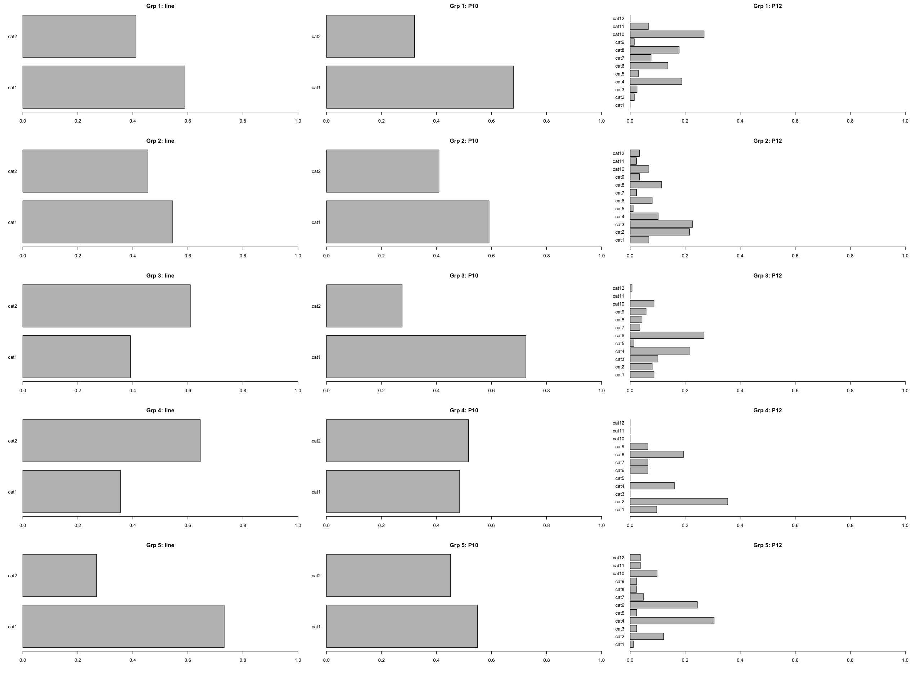
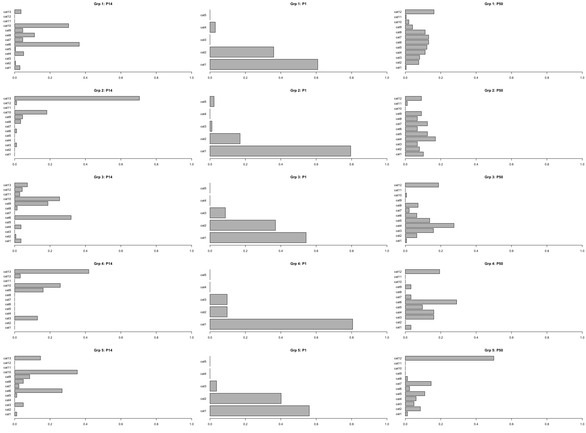
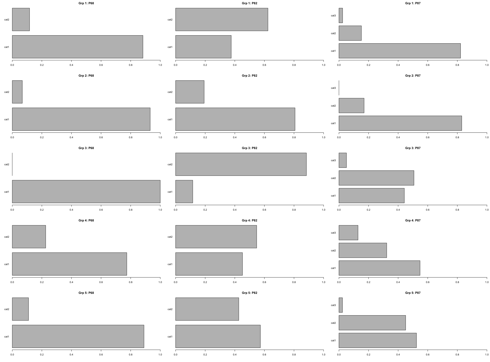
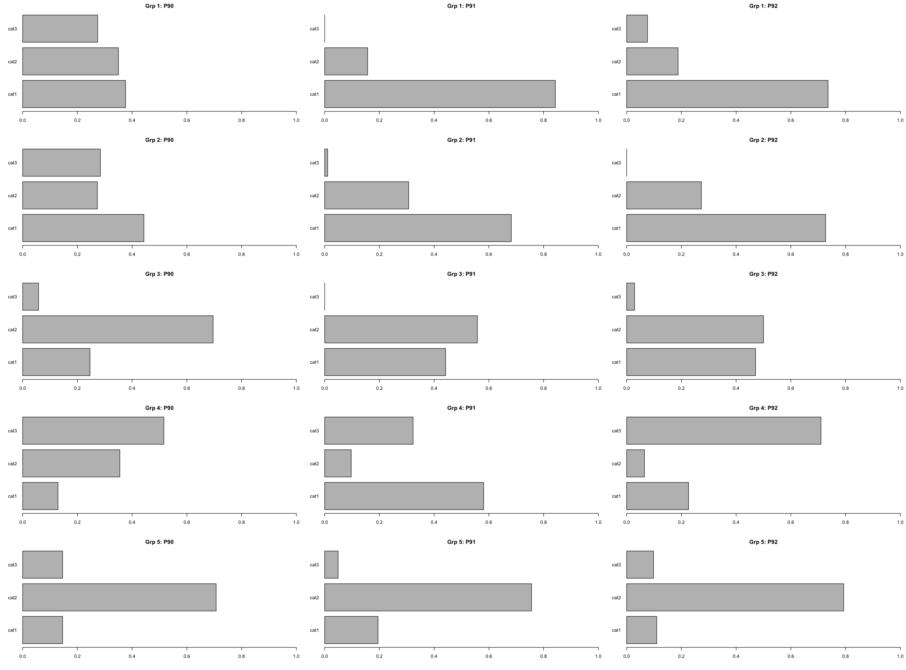
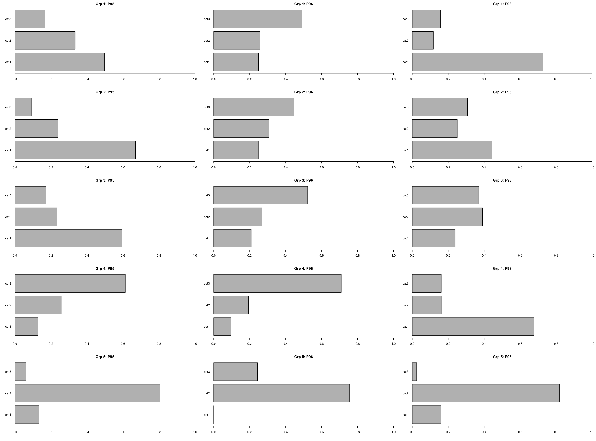
The Latent Classic Analytics cluster method hasn't distinguished between people who support or do not support the metro project.
Since the k-means algorithm is only suitable for dealing with ordinal data (based on scales) or numeric data, categorical data were excluded from this analysis. Excluding variables include occupation and housing type. Binary variable was treated as 1 or 2 scale. Ordinal variables, including age, education level, and income level, were treated as continuous numeric variables. For example, people who only received a middle school degree are two scales level lower than people who received a technical college degree. To better suit the context of the survey table, the final results were yielded back as similar to the previous Latent Classic Analytics table, which indicates the probabilities in each clustering rather than the centroid or means.
Results table (k = 6)
| Variable | Cluster 1 | Cluster 2 | Cluster 3 | Cluster 4 | Cluster 5 | Cluster 6 |
|---|---|---|---|---|---|---|
| line | 36.5, 63.5 | 51.4, 48.6 | 41.4, 58.6 | 72.6, 27.4 | 38.6, 61.4 | 79.2, 20.8 |
| Gender | 66.7, 33.3 | 63.8, 36.2 | 65.8, 34.2 | 56, 44 | 59.1, 40.9 | 71.9, 28.1 |
| Education | 8.3, 19.8, 21.9, 18.8, 2.1, 18.8, 2.1, 3.1, 3.1, 1, 0, 1 | 0, 0, 3.8, 16.2, 0, 16.2, 4.8, 19, 5.7, 29.5, 3.8, 1 | 9.9, 8.1, 4.5, 26.1, 3.6, 19.8, 4.5, 9.9, 3.6, 7.2, 0.9, 1.8 | 0, 16.7, 3.6, 20.2, 1.2, 26.2, 4.8, 6, 3.6, 13.1, 2.4, 2.4 | 2.3, 6.8, 9.1, 15.9, 4.5, 2.3, 11.4, 13.6, 2.3, 25, 6.8, 0 | 2.1, 9.4, 4.2, 18.8, 2.1, 13.5, 7.3, 14.6, 1, 17.7, 8.3, 1 |
| Income | 9.4, 15.6, 11.5, 24, 14.6, 7.3, 5.2, 4.2, 2.1, 0, 0, 6.2 | 1, 5.7, 8.6, 15.2, 11.4, 12.4, 12.4, 11.4, 4.8, 1.9, 0, 15.2 | 1.8, 10.8, 16.2, 21.6, 20.7, 6.3, 9, 3.6, 0, 0, 0, 9.9 | 1.2, 0, 4.8, 8.3, 4.8, 10.7, 9.5, 4.8, 3.6, 0, 0, 52.4 | 0, 9.1, 11.4, 15.9, 11.4, 11.4, 11.4, 9.1, 4.5, 4.5, 2.3, 9.1 | 0, 1, 6.2, 8.3, 8.3, 11.5, 12.5, 11.5, 5.2, 1, 1, 33.3 |
| Support or not | 100, 0 | 100, 0 | 100, 0 | 100, 0 | 0, 100 | 99, 1 |
| Rent or Own | 37.5, 62.5 | 8.6, 91.4 | 4.5, 95.5 | 84.5, 15.5 | 29.5, 70.5 | 91.7, 8.3 |
| P87 | 84.4, 15.6, 0 | 79, 19, 1.9 | 32.4, 60.4, 7.2 | 59.5, 36.9, 3.6 | 65.9, 22.7, 11.4 | 80.2, 19.8, 0 |
| P90 | 43.8, 38.5, 17.7 | 30.5, 44.8, 24.8 | 18.9, 72.1, 9 | 27.4, 45.2, 27.4 | 36.4, 34.1, 29.5 | 30.2, 42.7, 27.1 |
| P91 | 87.5, 11.5, 1 | 91.4, 8.6, 0 | 23.4, 73.9, 2.7 | 42.9, 50, 7.1 | 59.1, 31.8, 9.1 | 55.2, 43.8, 1 |
| P92 | 78.1, 19.8, 2.1 | 85.7, 12.4, 1.9 | 22.5, 65.8, 11.7 | 10.7, 63.1, 26.2 | 43.2, 36.4, 20.5 | 75, 24, 1 |
| P95 | 52.1, 32.3, 15.6 | 56.2, 31.4, 12.4 | 50.5, 36, 13.5 | 7.1, 65.5, 27.4 | 29.5, 31.8, 38.6 | 72.9, 20.8, 6.2 |
| P96 | 45.8, 37.5, 16.7 | 19, 24.8, 56.2 | 7.2, 36.9, 55.9 | 20.2, 54.8, 25 | 18.2, 40.9, 40.9 | 6.2, 16.7, 77.1 |
| P98 | 45.8, 29.2, 25 | 69.5, 19, 11.4 | 25.2, 45, 29.7 | 40.5, 48.8, 10.7 | 79.5, 18.2, 2.3 | 36.5, 25, 38.5 |
| P100 | 51, 43.8, 5.2 | 18.1, 31.4, 50.5 | 16.2, 61.3, 22.5 | 13.1, 47.6, 39.3 | 27.3, 22.7, 50 | 40.6, 46.9, 12.5 |
| P101 | 65.6, 27.1, 7.3 | 75.2, 22.9, 1.9 | 41.4, 45.9, 12.6 | 19, 57.1, 23.8 | 45.5, 31.8, 22.7 | 76, 19.8, 4.2 |
| Age | 1, 0, 9.4, 21.9, 36.5, 31.2 | 9.5, 34.3, 31.4, 20, 4.8, 0 | 12.6, 17.1, 28.8, 17.1, 14.4, 9.9 | 1.2, 8.3, 13.1, 19, 22.6, 35.7 | 0, 15.9, 22.7, 20.5, 25, 15.9 | 0, 5.2, 19.8, 27.1, 20.8, 27.1 |
| count | 96 | 105 | 111 | 84 | 44 | 96 |
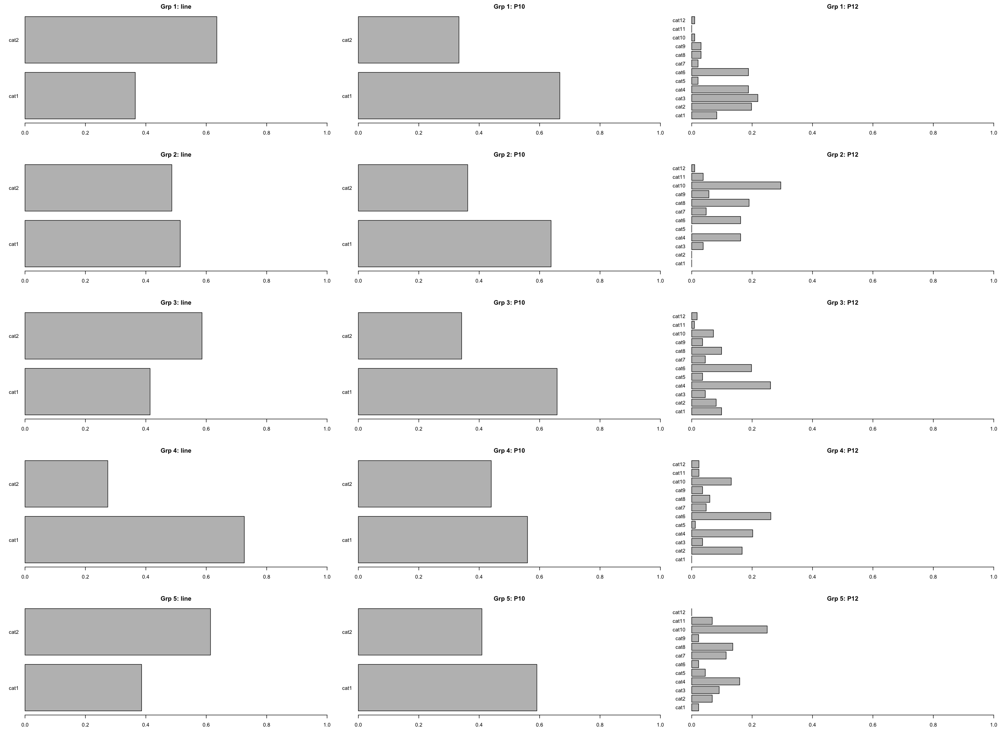
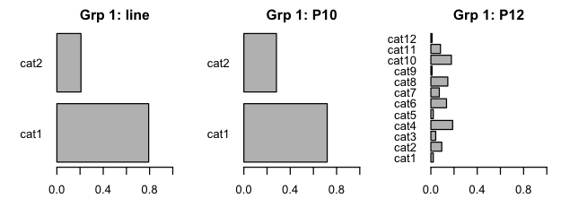
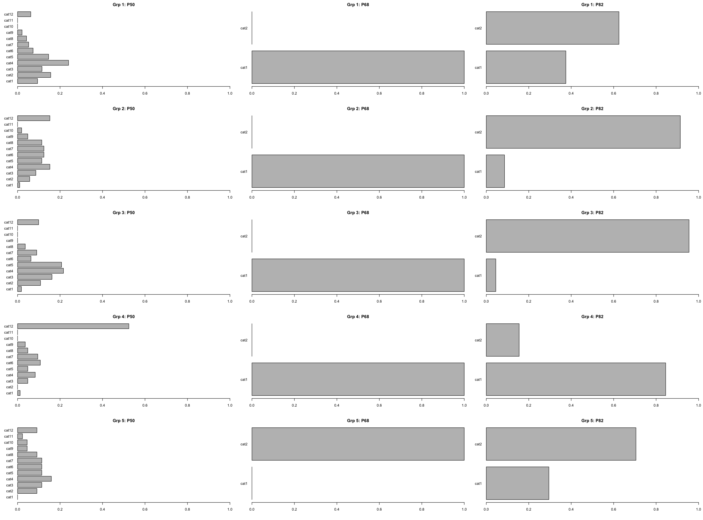
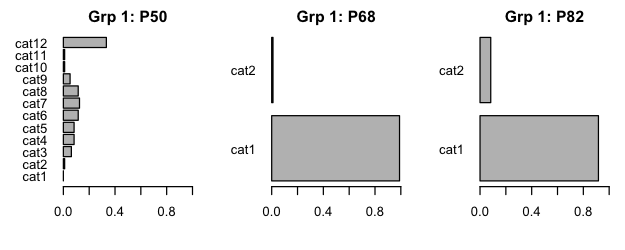
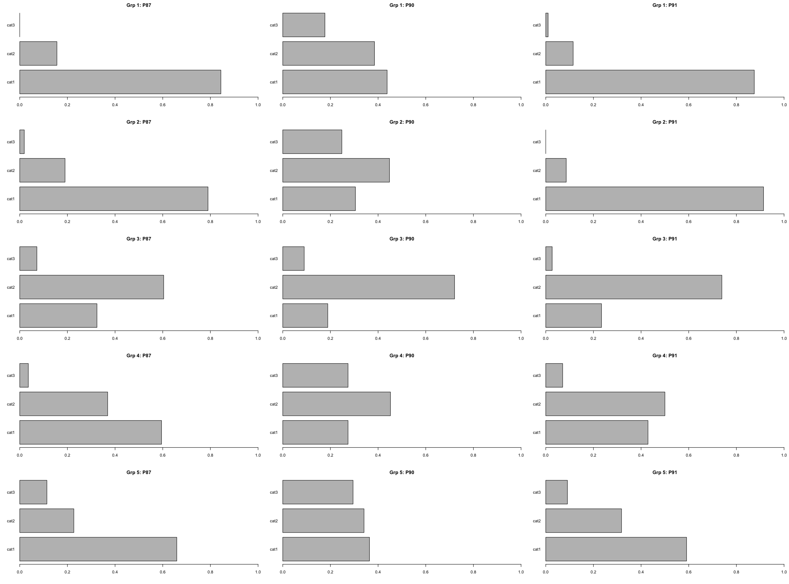
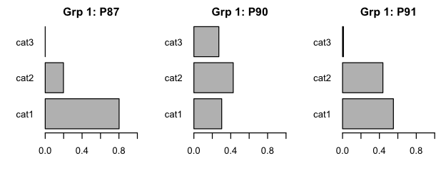
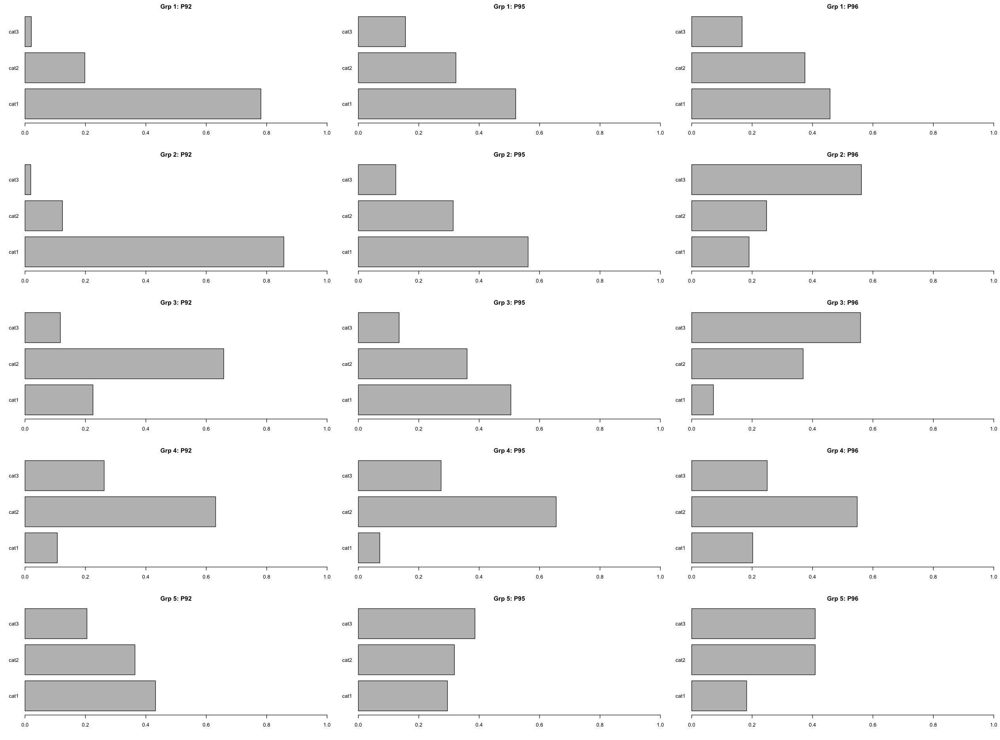
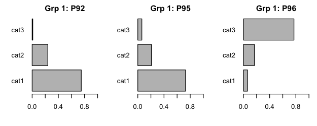
 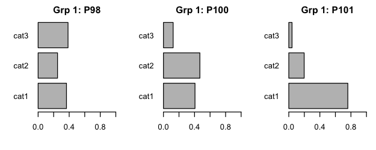
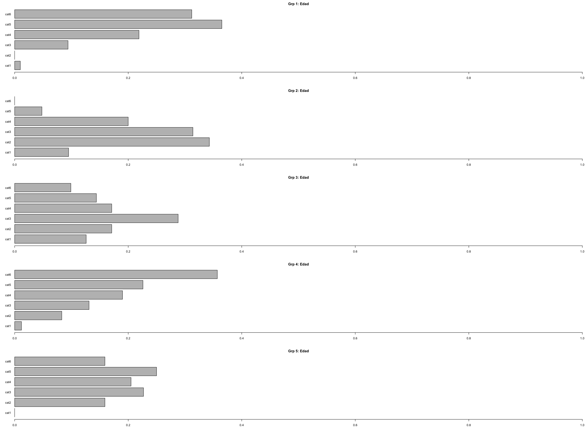
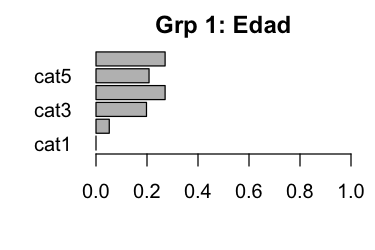
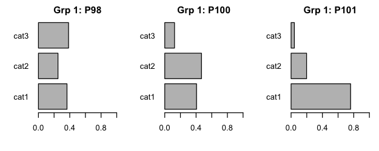
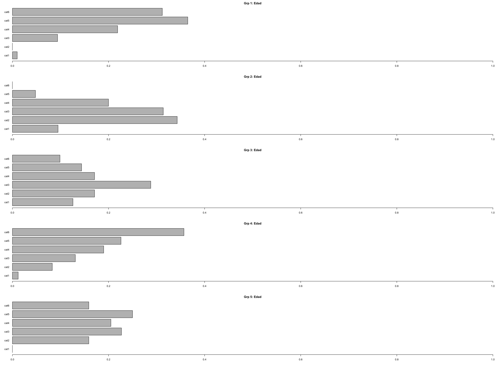
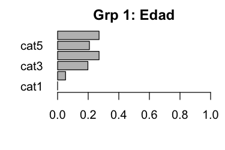
The k-means clustering successfully separates the non-support groups from other clusters.
Hierarchical clustering is a family of methods for grouping objects into a tree-like structure (a dendrogram) based on their pairwise dissimilarities. Unlike k-means, you don’t need to pre-specify the number of clusters (though you can “cut” the tree at any level to obtain a chosen number).
Summary tables (k=5) The table below summarizes clustering results for k=5 clusters. Each row represents a variable, and the values in the cells indicate the proportions or percentages for each cluster. For variables with multiple categories, the values are grouped and separated for clarity.
| Variable | Cluster 1 | Cluster 2 | Cluster 3 | Cluster 4 | Cluster 5 |
|---|---|---|---|---|---|
| line | 83.2, 16.8 | 16.7, 83.3 | 84, 16 | 43.9, 56.1 | 27.4, 72.6 |
| Gender | 76.6, 23.4 | 25, 75 | 56, 44 | 75, 25 | 58.3, 41.7 |
| Education | 2.2, 16.1, 5.1, 17.5, 3.6, 14.6, 8, 6.6, 2.9, 16.8, 5.1, 1.5 |
8.3, 6.7, 10, 13.3, 5, 16.7, 1.7, 15, 0, 18.3, 3.3, 1.7 |
2.7, 9.3, 5.3, 28, 0, 25.3, 8, 5.3, 1.3, 6.7, 2.7, 5.3 |
2.8, 7.8, 10, 20.6, 1.7, 15.6, 4.4, 17.8, 3.3, 13.9, 2.2, 0 |
8.3, 8.3, 7.1, 19, 0, 19, 2.4, 6, 8.3, 17.9, 3.6, 0 |
| Income | 2.9, 5.8, 8.8, 12.4, 5.8, 10.9, 7.3, 10.9, 6.6, 0, 0.7, 27.7 |
5, 11.7, 13.3, 13.3, 25, 6.7, 6.7, 5, 3.3, 1.7, 1.7, 6.7 |
1.3, 8, 6.7, 8, 13.3, 5.3, 13.3, 1.3, 1.3, 0, 0, 41.3 |
2.8, 7.2, 9.4, 18.9, 10.6, 12.2, 12.2, 7.8, 2.2, 1.7, 0, 15 |
0, 4.8, 13.1, 23.8, 16.7, 8.3, 8.3, 7.1, 1.2, 1.2, 0, 15.5 |
| Support or not | 97.1, 2.9 | 95, 5 | 93.3, 6.7 | 83.9, 16.1 | 95.2, 4.8 |
| Rent or own | 73.7, 26.3 | 21.7, 78.3 | 58.7, 41.3 | 30.6, 69.4 | 10.7, 89.3 |
| P87 | 78.1, 20.4, 1.5 | 63.3, 31.7, 5 | 58.7, 40, 1.3 | 85, 10, 5 | 16.7, 79.8, 3.6 |
| P90 | 38, 43.1, 19 | 26.7, 35, 38.3 | 25.3, 68, 6.7 | 40.6, 27.2, 32.2 | 3.6, 92.9, 3.6 |
| P91 | 65, 30.7, 4.4 | 91.7, 5, 3.3 | 10.7, 88, 1.3 | 82.8, 14.4, 2.8 | 23.8, 75, 1.2 |
| P92 | 62.8, 29.9, 7.3 | 76.7, 18.3, 5 | 6.7, 89.3, 4 | 65.6, 21.7, 12.8 | 41.7, 46.4, 11.9 |
| P95 | 56.2, 28.5, 15.3 | 28.3, 68.3, 3.3 | 14.7, 78.7, 6.7 | 57.8, 17.2, 25 | 53.6, 27.4, 19 |
| P96 | 19.7, 19, 61.3 | 18.3, 53.3, 28.3 | 6.7, 80, 13.3 | 27.8, 25, 47.2 | 11.9, 23.8, 64.3 |
| P98 | 37.2, 33.6, 29.2 | 43.3, 46.7, 10 | 24, 69.3, 6.7 | 66.7, 8.3, 25 | 40.5, 35.7, 23.8 |
| P100 | 26.3, 56.2, 17.5 | 20, 50, 30 | 16, 72, 12 | 38.9, 16.7, 44.4 | 21.4, 56, 22.6 |
| P101 | 62.8, 24.8, 12.4 | 50, 36.7, 13.3 | 10.7, 89.3, 0 | 73.3, 14.4, 12.2 | 48.8, 39.3, 11.9 |
| Age | 0.7, 8, 21.9, 24.1, 14.6, 30.7 | 0, 21.7, 15, 21.7, 26.7, 15 | 6.7, 8, 26.7, 21.3, 17.3, 20 | 5.6, 15, 20.6, 17.8, 26.7, 14.4 | 11.9, 20.2, 21.4, 21.4, 10.7, 14.3 |
| count | 137 | 60 | 75 | 180 | 84 |
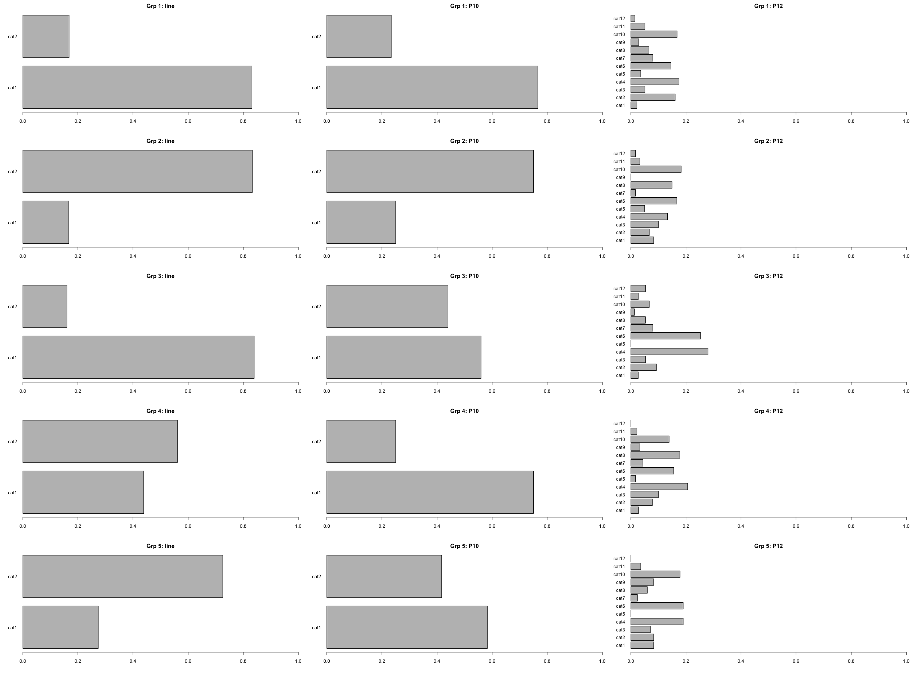
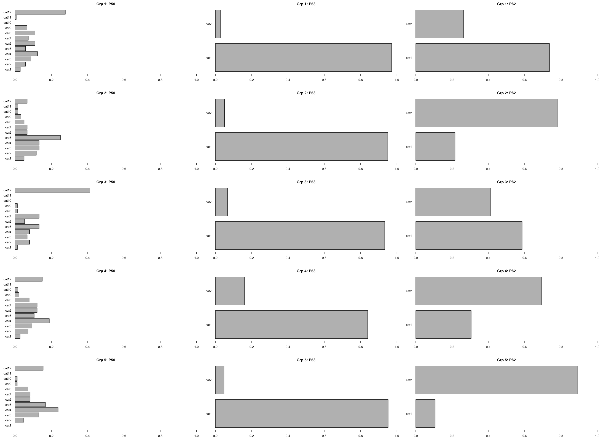
 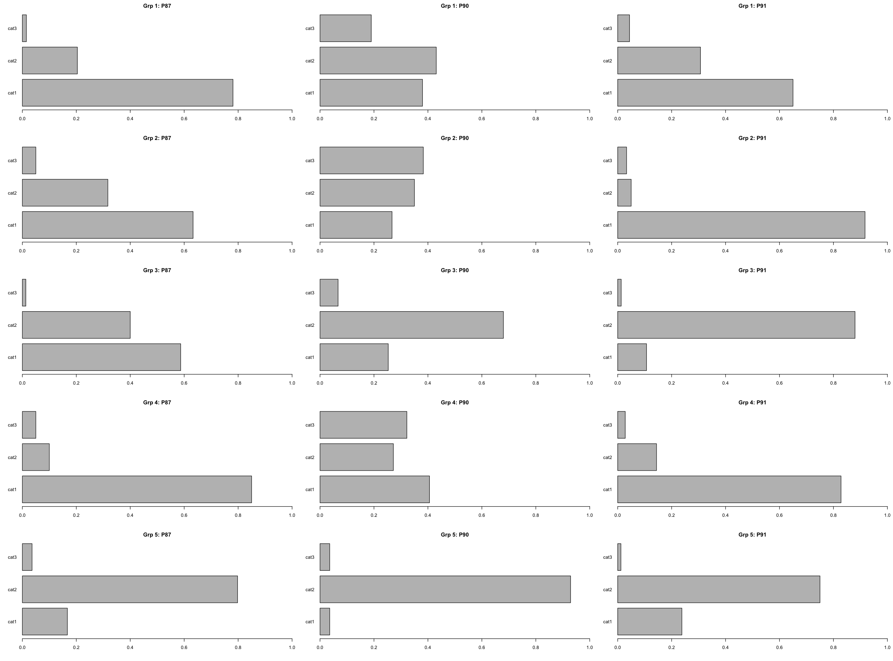
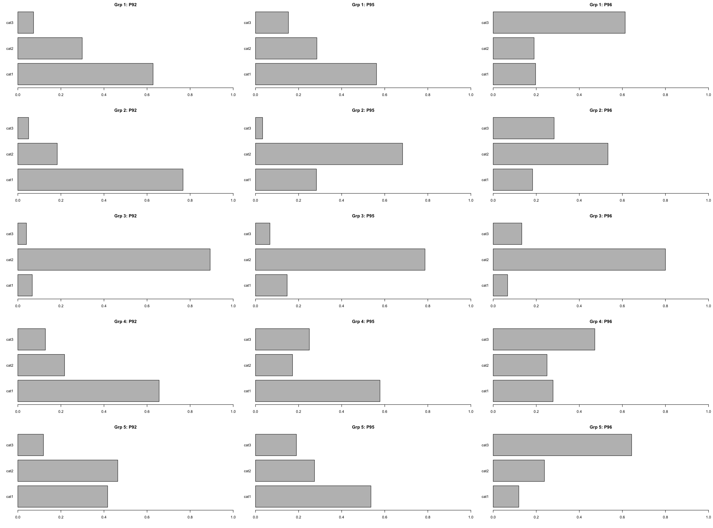
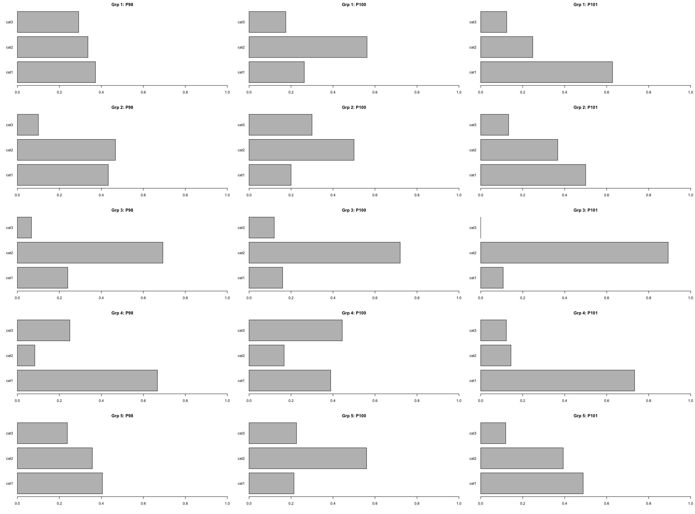
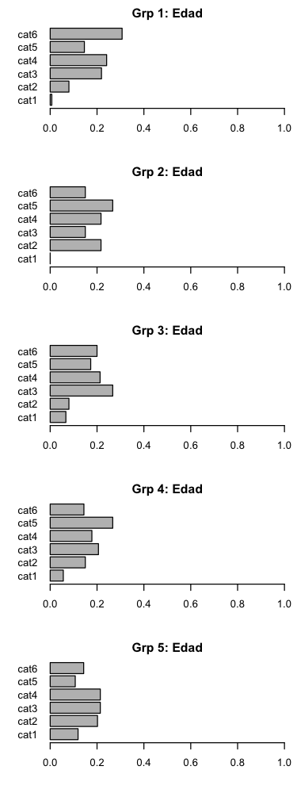
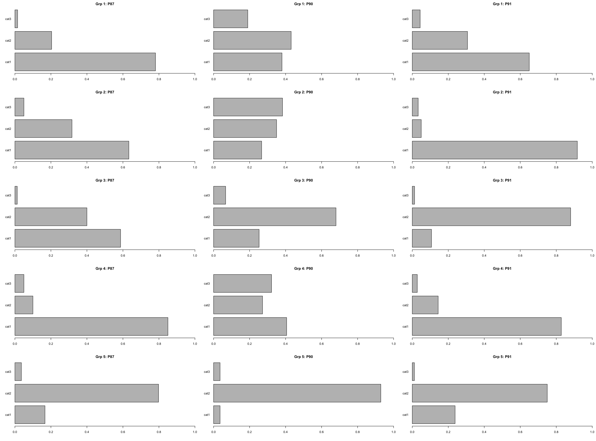
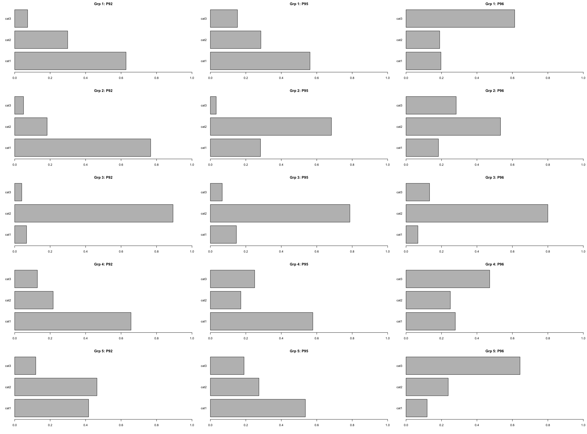
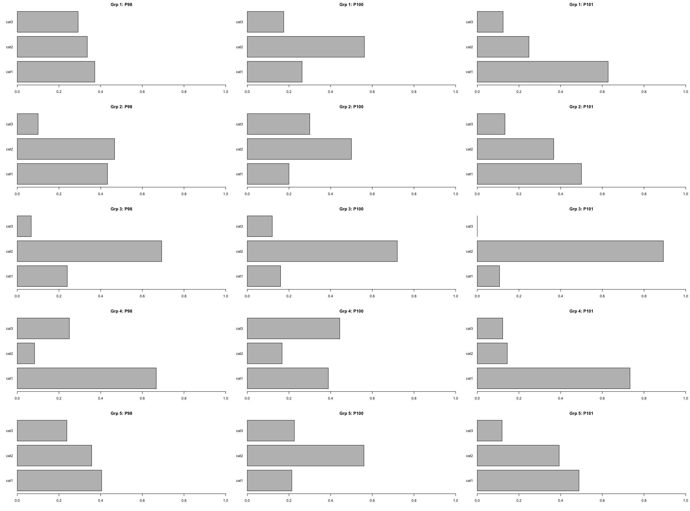
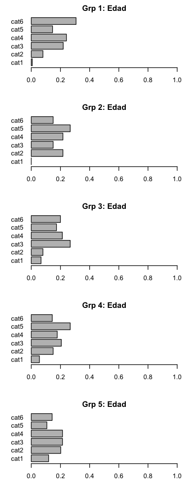
The Hierarchical clustering method did not separate the non-support group from others.
Across latent class, k-means, and hierarchical clustering, housing tenure and demographic factors consistently shape both support for and perceptions of the Metro project, particularly renter versus owner status, age, and income. Renters, especially younger cohorts, overwhelmingly support the project and anticipate gains in housing values and expense reductions, yet remain skeptical about travel-time savings. Conversely, older homeowners and high-income groups exhibit more ambivalence: while they acknowledge potential economic and safety benefits, they express concerns about noise, cost, and personal convenience, resulting in a lower net support or neutral stance.
From a technical standpoint, k-means clustering identified almost 99% (44 out of 45) of the metro skeptical sample as belonging to one particular cluster (k-means cluster 5). Those non-support groups are predominantly majority dominated by renters, with mid- to higher-income levels and educational backgrounds. They worried about potential noise concerns, increased living expenses, and were not satisfied with the current public transportation in Bogotá (mainly due to cost of living and noise concerns). The Hierarchical and Latent Classic Choice method yields mixed results, but with relatively straightforward labels for each clustering specified in the main results documentation.
Footnote:
The results table shows the possibility of a random choice among each categorical group, or the proportion of each category in the clustering sample. For example, in k-means, the cluster 1 line variable shows 36.5 and 63.5, indicating that in cluster 1, 36.5% of the cluster is located close to line 1, while 63.5% of the cluster is located close to line 2. In other words, if you randomly pick one sample from cluster 1, the possibility of this sample living close to line 1 is 36.5% and living close to line 2 is 63.5%.